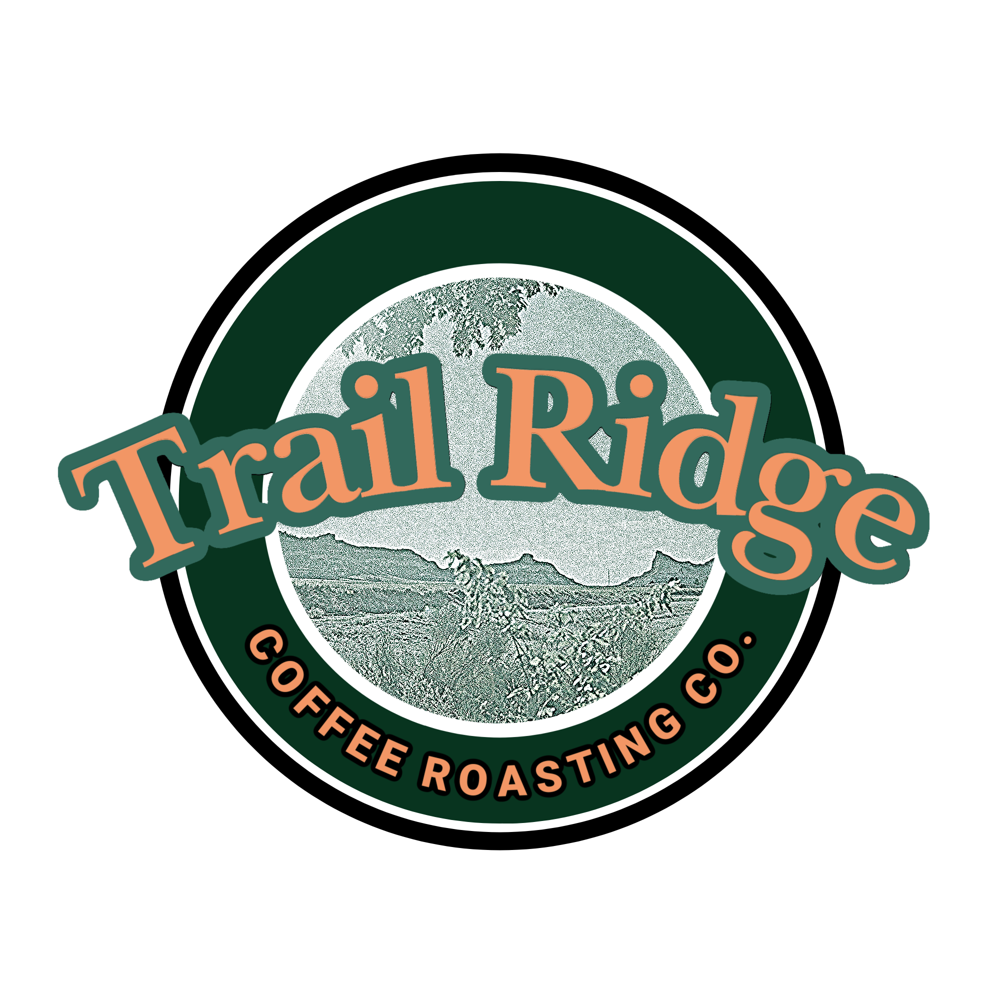

Hello! We are Brenan, Daniel and Tierney; three people with a passion for coffee. The idea for Trail Ridge came to us during a hike one morning when we realized that we could combine our love for both coffee and nature. From that moment we began working on perfecting our roasts, one bean at a time. We strive to provide tasty flavor profiles and a premium coffee experience while limiting our environmental footprint. Try a bag of our beans and embark on the Trail Ridge journey.
